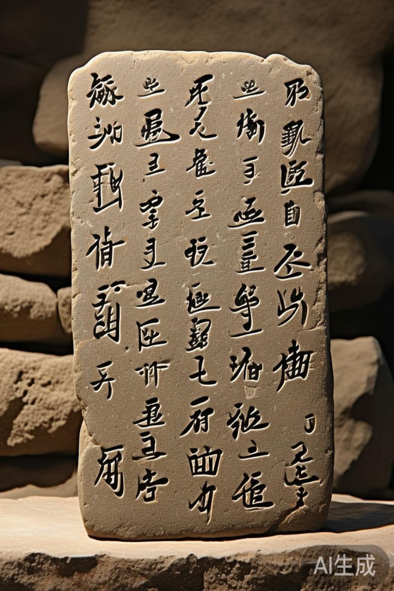

九成宫醴泉铭
唐代名碑
唐代贞观六年(632年)
魏征 撰文
欧阳询 书丹
陕西麟游县
欧阳询
楷书
唐代名碑
皇家碑刻
书法艺术

2.4k 次查看
碑刻信息
- 碑刻年代 唐代贞观六年
- 碑刻材质 青石
- 碑刻尺寸 247×120×27cm
- 现存地点 陕西麟游县博物馆
- 发现时间 宋代
- 保护级别 国家一级文物
碑文阐释
原文
现代文译文
维大唐开元二十有九年，岁次辛巳，秋八月丁丑朔，十三日己丑。故朝散大夫、守秘书少监、集贤院学士、上柱国、赐紫金鱼袋、赠秘书监、江夏李公，字太白，葬于当涂青山之阳。 公之生也，先天地而生；公之没也，后天地而没。其为文也，拔地倚天，陵轹万古；其为志也，怀瑾握瑜，含英咀华。 公性倜傥，好神仙，喜纵横，击剑为任侠，轻财好施。常欲济苍生，安社稷，然遭逢乱世，有志不伸。乃浪迹江湖，浮游四方，与名流贤士，诗酒唱和。
在大唐开元二十九年，岁次辛巳，秋季八月初一为丁丑日，十三日为己丑日。已故的朝散大夫、守秘书少监、集贤院学士、上柱国、赐紫金鱼袋、追赠秘书监的江夏李公，字太白，安葬在当涂青山的南面。 李先生诞生仿佛先于天地，逝世又似后于天地。他的文章，气势雄伟高出地面贴近天际，超越万古；他的志向，如同怀揣美玉手握宝玉，品味吸收着诗文的精华。 李先生性情洒脱不拘，喜好神仙之术，热衷于纵横之学，击剑行侠仗义，轻视财物乐于施舍。常常想要救济苍生，安定国家社稷，然而遭遇乱世，有志向而不能施展。于是浪迹江湖，漫游四方，与名流贤士们诗歌唱和，饮酒作乐。
李白墓碑文历史背景分析
李白墓碑文撰写于大唐开元二十九年（公元741年），正值盛唐时期，这是中国历史上政治稳定、经济繁荣、文化昌盛的黄金时代。
开元年间，唐玄宗李隆基励精图治，任用贤能，开创了"开元盛世"。这一时期，文化艺术得到极大发展，诗歌创作达到顶峰，出现了李白、杜甫、王维等一大批杰出诗人。
李白（701年－762年），字太白，号青莲居士，是唐代最伟大的浪漫主义诗人之一，被后人誉为"诗仙"。他的一生历经坎坷，曾供奉翰林，后因得罪权贵而离开长安，开始漫游四方。安史之乱爆发后，他因参与永王李璘幕府而被流放夜郎，途中遇赦。晚年漂泊东南一带，最终病逝于当涂（今属安徽）。
此碑文撰写于李白去世前一年，反映了当时文人对李白文学成就的高度评价，也体现了盛唐时期文人的精神风貌和价值取向。
对这段阐释有疑问？我可以为您解答更多细节
相关时间线
701年
李白出生于碎叶城（今吉尔吉斯斯坦托克马克附近）
724年
李白开始漫游天下，离开蜀地
742年
李白被召入长安，供奉翰林
762年
李白病逝于当涂，享年62岁